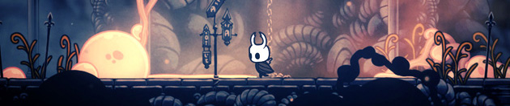

Бросьте вызов глубинам заброшенного Королевства


Глубоко под угасающим городом Грязьмут лежат руины древнего Королевства. Многих влечет под землю тяга к богатству, славе или ответам на старинные загадки.
Hollow Knight – классическое двухмерное приключение в огромном взаимосвязанном мире. Исследуйте извилистые пещеры, древние города и смертоносные пустоши, сражайтесь с порчеными тварями и заводите дружбу со странными жуками, раскрывайте древние тайны в самом сердце королевства.


Особенности игры
• Станьте хозяином своей судьбы! Мир Халлоунеста огромен и открыт. Выбирайте свой путь – какой тропой идти, с какими врагами встречаться.
• Развивайтесь, приобретая новые мощные умения и навыки! Пополняйте запас заклинаний, силы и скорости. Воспаряйте к новым высотам на волшебных крыльях.Рвитесь вперед, словно сверкающая молния. Обращайте врагов в пепел с помощью «Пламенной души»!
• Надевайте амулеты! Древние реликвии хранят в себе необычные силы. Выбирайте то, что вам по душе – и ваше путешествие будет уникальным!
• Невероятное количество милых и страшных персонажей оживает благодаря традиционной покадровой 2D-анимации.
• Больше 130 противников! 30 эпических боссов! На пути вас ждут схватки со свирепыми зверями и победы над рыцарями древности. Выследите всех до единого чудовищ и внесите их в свой охотничий журнал!
• «Гвоздь грез» позволит проникнуть в чужой разум. Откройте для себя обратную сторону персонажей, с которыми встречаетесь, и врагов, с которыми вам предстоит биться.
• Великолепные рисованные пейзажи с экстравагантным параллаксом рождают необычайное чувство глубины мира.
• Наносите свой путь на карту с помощью разнообразных картографических инструментов. Покупайте компасы, перья, карты и булавки, чтобы лучше понимать многочисленные «закрученные» пейзажи Hollow Knight.
• В пути игрока сопровождают полупризрачные, трогающие душу мелодии Кристофера Ларкина. Они – эхо величия и скорби павшей цивилизации.
• Пройдя Hollow Knight, вы откроете доступ к режиму «Стальной души» – вызову из вызовов!